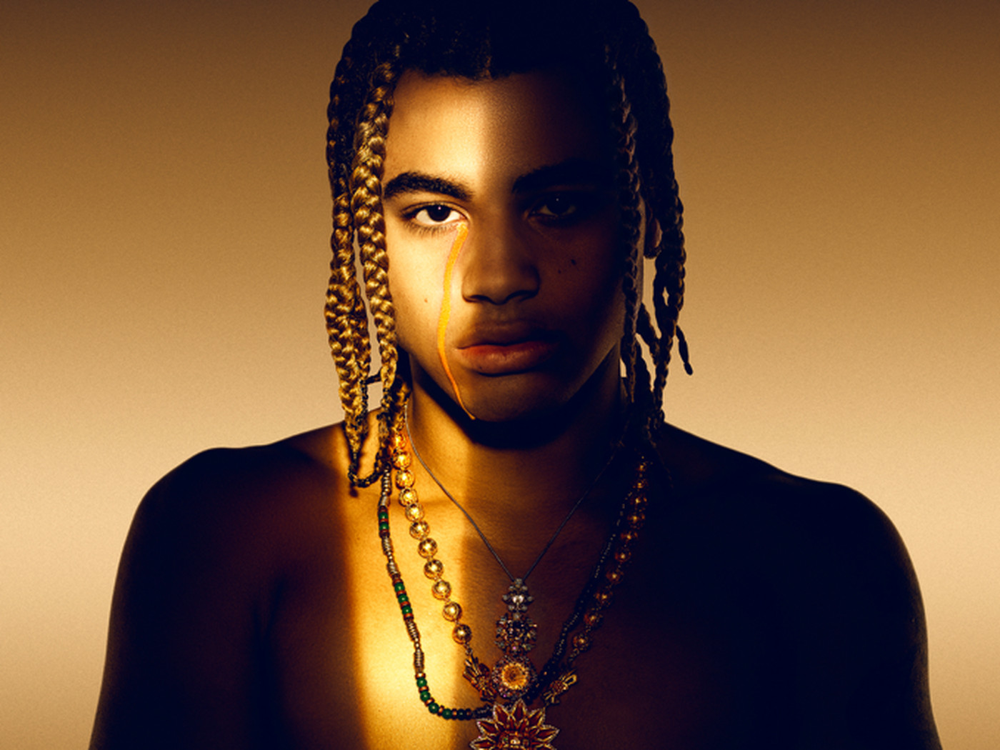

Golden Landis Von Jones, known professionally as 24kGoldn, is an American rapper and singer. In 2019, he rose to fame with his single, "Valentino", peaking at number 92 on the US Billboard Hot 100. It was certified platinum by the Recording Industry Association of America in April 2020.
24kGoldn was born Golden Landis Von Jones in 2000. Growing up in a lively neighborhood in the Bay Area, he was exposed to different cultural perspectives early on, which would later inform his versatile approach to music. He began singing, but during his formative years he was more interested in fashion and sneakers than music. When he began rapping at age 14, his musical persona took shape quickly. By 2016, he had begun posting songs online, and early singles like "iPhone" and "Trapper's Anthem" attracted moderate attention. He steadily released new songs, and it was 2018's "Ballin' Like Shareef" that broke through to wider audiences. At this point, 24kGoldn was attending University of Southern California and signed to Columbia affiliate Records LLC while working toward his degree. From there, he recorded several songs that would become viral hits, beginning with the danceable and hooky "Valentino" in late 2018 and continuing in 2019 with "Games on Your Phone" and "A Lot to Lose." His first EP, Dropped Outta College, was released in November 2019 and charted in the Billboard 200. The song "Mood" featuring Iann Dior arrived in July 2020 and topped the Billboard Hot 100. The song reached the number one position in multiple countries and was popular enough to merit a remix featuring Justin Bieber and J Balvin. In March of 2021, his debut studio album El Dorado arrived, featuring appearances from Future, DaBaby, and Swae Lee. It was a significant success for 24kGoldn, reaching number 24 on the Billboard 200 and, rather appropriately, going gold. He returned later in the year with the single "Prada," featuring Lil Tecca.